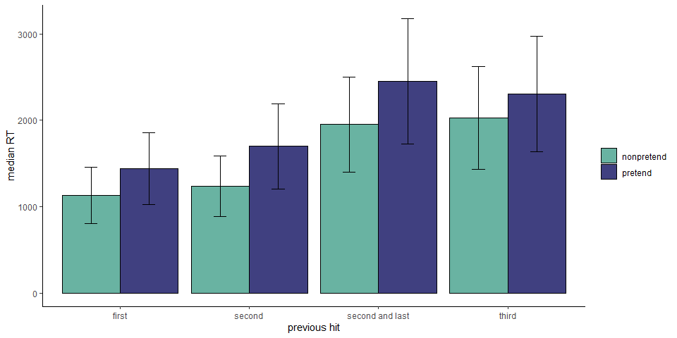
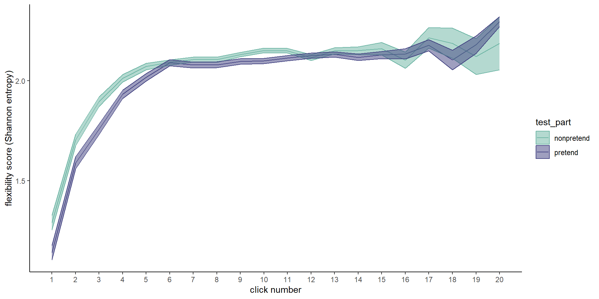
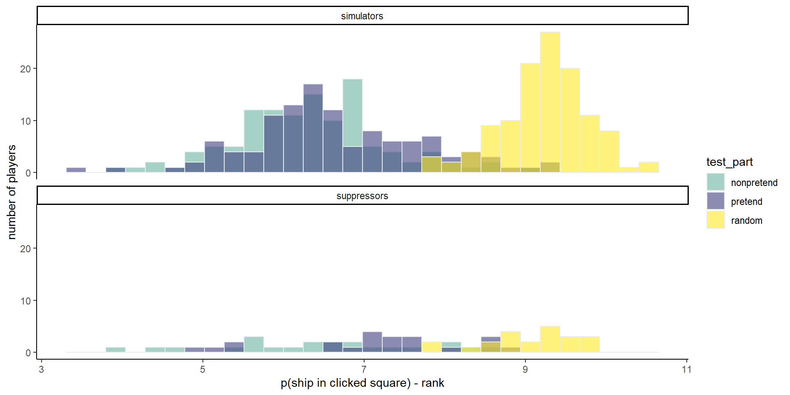

1 Exp. 1: Battleship; Exploratory results
1.1 Ship completion
To get at subtler dynamics in a more direct way, in a follow-up exploratory analysis we focused on decision latencies following a hit. We categorized hits into four types: first hit on a ship, second hit on a ship when the size-three submarine hasn’t been sunk yet, second hit on a ship when the size-three submarine has already been sunk, and third hit on a submarine. In the first case, players know the ship must continue in one of the neighboring cells. In the second case, there is a good chance the ship continues (if this ship turns out to be a submarine). In the third and fourth cases, it is clear that the ship is fully sunk.
In non-pretend games, participants were significantly slower to select the next cell when they knew they had just completed a ship (categories 3 and 4) compared to when they just hit a ship, but were not sure (category 2) or knew they had not completely sunk it (category 1; \(t(404) = -16.82\), \(p < .001\)). Specifically, we find that participants were slower by 728 ms to make the next cell selection after hitting the second cell of a ship if the size-three submarine had already been sunk (\(t(404) = 13.45\), \(p < .001\)).
Strikingly, we found the exact same pattern in pretend games. Players were faster to make the next cell selection when they pretended to think that the current ship might not be fully sunk (\(t(369) = -14.47\), \(p < .001\)). This was not merely a difference between the first, second and third hits: participants were slower by 754 ms to make the next cell selection after hitting the second cell of a ship if the size-three submarine had already been sunk (\(t(404) = 13.45\), \(p < .001\)). Further analysis confirmed that this effect remained significant when controlling for click number (\(t(404) = 11.28\), \(p < .001\)), and when restricting the analysis to the second hit of a ship that is in fact of size-two (\(t(366) = 3.91\), \(p < .001\)).
This last finding bears emphasizing: In both classes two and three, pretenders knew that they had just sunk a size-two ship, but in the second case they pretended not to know this fact, and this affected their their response latency in the same way it would have been affected had they been in a non-pretend game.

1.2 Half games
Our optimality analysis showed that pretenders’ click selections closely resemble those of non-pretenders, at least in that they are not random, but rather guided by where a ship might be. However, due to the high number of possible board configurations, data from full games provide limited opportunity to compare cell selections for specific game states. In addition to asking, “What guides cell selections in pretend and non-pretend games?”, we also wanted to ask, “Where exactly would pretenders and non-pretenders click, given a specific board configuration?”.
To achieve this, the sixth game in each block started not with an empty grid, but with the contents of some cells already revealed by a previous player. As before, pretenders also knew where the remaining ships were hidden, but tried to play as if they only knew what was known to this previous player. Having cell selections from 250 players for each board configuration and condition allowed us to plot and compare the distribution of clicks under a genuine, or pretend, knowledge state.
In the third column we plot the distribution of clicks for non-pretend players. This distribution is in agreement with the hit probability map (board A: \(r = .81\), 95% CI \([.55, .93]\), \(t(16) = 5.48\), \(p < .001\); board B: \(r = .87\), 95% CI \([.68, .95]\), \(t(16) = 7.01\), \(p < .001\)). Finally, in the fourth column we plot the distribution of cell selections for pretend players. Although noisier, this distribution is also in agreement with the hit probability map (board A: \(r = .49\), 95% CI \([.03, .78]\), \(t(16) = 2.27\), \(p = .037\); board B: \(r = .73\), 95% CI \([.40, .89]\), \(t(16) = 4.28\), \(p = .001\)), and more importantly, with the hit distribution of non-pretenders for the same board configuration (board A: \(r = .63\), 95% CI \([.31, .82]\), \(t(23) = 3.89\), \(p = .001\), board B: \(r = .87\), 95% CI \([.73, .94]\), \(t(23) = 8.60\), \(p < .001\)).

Figure 1.1: Half games. First column: the two boards, as they appeared to pretenders. Second column: objective hit probability, given game state. Third and fourth columns: empirical click probabilities in non-pretend and pretend games, respectively.
1.3 Within-participant click entropy
In this analysis, we asked how flexible players were in their click sequences, across games. We quantified flexibility as the Shannon entropy of cell selections across games, for a given click number. For example, if a player always started their games by clicking in the top left corner, their flexibility score for the first click will be \(H([1,1,1,1,1])=0\). Flexibility was quantified separately for pretend and non-pretend games.

Flexibility scores increased as a function of click number for both pretend and non-pretend games, as expected if players adjust their behaviour based on the outcomes of previous clicks. This process reached a plateau of around \(H=2.1\) at click number 6.
Importantly, before that point, flexibility was persistently lower in pretend games (click #1: \(t(479) = -3.93\), \(p < .001\); click #2: \(t(479) = -3.40\), \(p = .001\); click #3: \(t(479) = -4.88\), \(p < .001\); click #4: \(t(479) = -3.26\), \(p = .001\); click #5: \(t(479) = -2.64\), \(p = .009\)).
We reasoned that this tendency to rigidly follow a pre-defined plan may underlie at least some of the difference in game optimality between pretend and non-pretend games. Interestingly, however, we find no significant correlation between the pretend/non-pretend differences in flexibility and optimality in the first 5 clicks (\(r = -.07\), 95% CI \([-.15, .02]\), \(t(478) = -1.44\), \(p = .150\)).
1.4 Suppression or simulation?
At the end of the experiment, players were asked whether they had a strategy for pretending or for detecting pretense. I (MM) manually labeled their responses according to three criteria: mentions of suppression (e.g., “Trying to ignore the hints”), simulation (e.g., “Trying to imagine how I would react”), and rules (e.g., “Checking the corners and center before random selection of tiles”). Some answers got more than one label and some got none. Overall, 32 mentioned using suppression, 127 mentioned using simulation, and 220 mentioned following rules.
In the following analysis, we focus on the first two labels and carve out two sets of players: 23 players who reported using suppression but not simulation, and 118 who reported using simulation but no suppression.
1.4.1 Click optimality
 The mean negative optimality score of non-pretend games was 6.4524288 among suppressors and 6.3259544 among simulators (\(t(25.42) = 0.45\), \(p = .655\)). The mean negative optimality score of pretend games was 7.138416 among suppressors and 6.6400715 among simulators (\(t(28.77) = 1.94\), \(p = .062\)). To the very least, simulators did as well as suppressors in pretending.